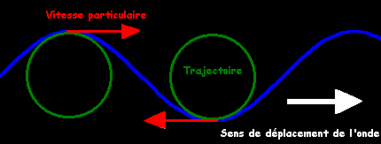

é THEORIE
a)Hypothèses :
Ecoulement parfait, incompressible, homogène, P₀=
cst, pas de tension superficielle, A<<L
b)Approximations :
-
A<<L
=> Dv/Dt=dv/dt
-
rot
v=cst=0 (Lagrange)
-
v= grad Phi
-
linéarisation (cadre d’Airy)
-
T= cst
c)Equations :
-
PFD
=> grad (Phi + g z +P/m)=0
-
Bilan
de masse => div v=0
-
On
pose Phi = f(z) g(kx-wt)
Et on
obtient :
-
f(z)=a sinh kz + b cosh kz
- g(kx-wt)=cos (kx-wt)
d)Conditions limites :
- Vitesse verticale nulle au fond
- Surface P=P₀
-
a= b th (kh)
-
relation de dispersion : w²= g k th (kh)
e)Trajectoires :
-
x=x0 - kb / (w cosh(kh)) cosh k(z0+h) cos kx0-wt
-
z=z0 - kb
/ (w cosh(kh)) sinh k(z0+h) sin kx0-wt
